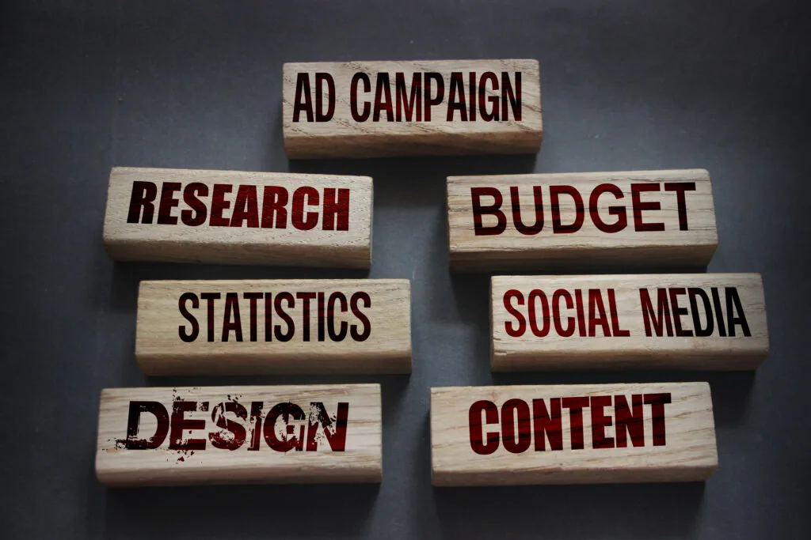

Advertising is a critical component of any business, providing a vital means of attracting customers, building brand recognition, and promoting products and services. However, advertising can also be expensive, with costs that can quickly add up. To ensure that your advertising dollars are being spent effectively, it is essential to understand the various costs involved in advertising and how to minimize them.
In this article, we will delve deeper into the total cost of advertising, exploring the different types of costs, the factors that influence them, and the strategies that companies can use to maximize the effectiveness of their advertising campaigns while minimizing costs.
Types of Advertising Costs

Advertising costs can be divided into two main categories: the cost of the advertising space or medium, and the cost of producing the advertising content. The cost of the advertising space refers to the price charged by the media outlet for placing your ad, while the cost of producing the advertising content refers to the cost of creating and producing the ad, including graphic design, copywriting, photography, and videography.
Factors That Influence Advertising Costs
Several factors can influence the cost of advertising, including:
- The target audience: The demographics of your target audience, such as age, gender, income, and location, can influence the cost of advertising.
- The type of advertising medium: The cost of advertising space can vary greatly depending on the type of medium being used, such as television, radio, print, digital, or outdoor advertising.
- The size and duration of the ad: The size of the ad and the length of time it will run can both impact the cost of advertising.
- The time of day and day of the week that the ad runs: The cost of advertising can be influenced by the time of day and day of the week that the ad is scheduled to run.
- The competition for advertising space: The level of competition for advertising space in a particular medium or region can impact the cost of advertising.
- The region where the ad will be placed: The cost of advertising can vary depending on the geographic location where the ad will be placed.
Strategies for Maximizing the Effectiveness of Your Advertising Campaigns
To minimize advertising costs, companies can employ several effective strategies, including:
- Conducting market research: Understanding your target audience and the advertising medium that is most likely to reach them is critical to developing an effective advertising strategy that minimizes costs.
- Creating high-quality, cost-effective content: Creating high-quality, attention-grabbing content that is optimized for your target audience and the advertising medium can help maximize the impact of your advertising campaigns while minimizing costs.
- Negotiating with media outlets: Working with media outlets to negotiate lower rates for advertising space can help reduce the cost of advertising.
- Utilizing multiple advertising channels: Utilizing multiple advertising channels, such as television, radio, print, digital, and outdoor advertising, can help reach a wider audience while spreading out the cost of advertising over multiple channels.
- Monitoring and analyzing campaign performance: Regularly monitoring and analyzing the performance of your advertising campaigns can help identify areas for improvement and cost savings.
Conclusion
Advertising is an essential aspect of any successful business, providing a means of attracting customers and promoting your products and services. To maximize the effectiveness of your advertising campaigns, it is important to understand the different types of advertising costs, the factors that influence them, and the strategies that can be used to maximize their impact. With a well-thought-out advertising strategy and a commitment to ongoing optimization, companies can take their advertising campaigns to the next level, and achieve the results they need to succeed in today’s competitive marketplace.